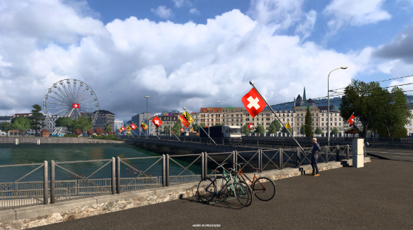

Euro Truck Simulator 2 - Übersicht
Schweiz Nacharbeit - Wiegestation und Standpunkte
Als Teil des laufenden Projekts zur Überarbeitung der Schweiz freuen wir uns, die neu gestalteten Wiegestationen und Aussichtspunkte
vorzustellen, die unserer #BestCommunityEver ein intensives und visuell beeindruckendes Erlebnis bieten.

Wiege-Stationen
Das gebirgige Terrain der Schweiz ist mit zahlreichen Tunneln durchzogen, so dass die Sicherheit und der Zustand des Fahrzeugs höchste
Priorität haben. Um diesem Umstand Rechnung zu tragen, werden die Spieler nun an strategisch günstigen Stellen auf der Schweizer Karte auf
Wiegestationen treffen. Diese Stationen, darunter Orte wie Saint-Maurice, Erstfeld und Rothenbrunnen, dienen als Kontrollpunkte, an denen die
Spieler aufgefordert werden, mit den örtlichen Behörden zusammenzuarbeiten, um Fahrzeuge zu kontrollieren und das Gewicht zu überprüfen.
Das Navigieren durch die Alpen erfordert mehr als nur fahrerisches Können, es erfordert auch ein hohes Maß an Sicherheit. Die überarbeiteten
Wiegestationen zielen darauf ab, den Realismus des Spiels zu erhöhen, indem sie diese wesentlichen Elemente einbeziehen und eine Ebene der
Authentizität zu Ihrem virtuellen Trucking-Erlebnis hinzufügen.
Aussichtspunkte
Die Schweiz ist ein Land, das mit natürlicher Schönheit und ikonischen Wahrzeichen gesegnet ist, und die Überarbeitung sorgt dafür, dass die Spieler
diese atemberaubenden Orte aus nächster Nähe betrachten können. Die Einführung von Aussichtspunkten an wichtigen Orten wie dem Zentrum von Genf, dem
Zentrum von Zürich und dem Furkapass ermöglicht es den Spielern, ihre Reise zu unterbrechen und die wunderschöne Landschaft zu genießen.
Ob Sie sich nun inmitten der majestätischen Alpen befinden oder die pulsierenden Stadtzentren erkunden, die Aussichtspunkte bieten Ihnen die Möglichkeit,
das Wesen der Schweiz einzufangen. Nehmen Sie sich einen Moment Zeit, um die Quelle der Rhone zu bestaunen, die dramatischen Alpengipfel zu sehen und die
steilen Hänge rund um den Furkapass zu bezwingen. Erkunden Sie das Stadtzentrum von Genf mit Blick auf den Genfer See, und erleben Sie das pulsierende Herz
von Zürich. Als zusätzlichen Bonus können Sie zwei geheime Aussichtspunkte auf versteckten Straßen finden. Aber wir werden Ihnen die Orte nicht verraten!
Die Schönheit der Schweiz einzufangen ist keine Kleinigkeit, aber wir haben uns bemüht, den malerischen Landschaften und ikonischen Wahrzeichen gerecht zu
werden. Wir hoffen, dass die Spieler die Liebe zum Detail zu schätzen wissen und die Reise durch die Schweizer Alpen in vollen Zügen genießen werden. Denkt
daran, dass die Arbeit, die ihr hier seht, noch nicht abgeschlossen ist. Vergesst nicht, uns auf unseren sozialen Medien zu folgen, damit ihr keine
Neuigkeiten verpasst. Gute Reise!
Wenn du Fragen hast, so kannst du diese gern bei uns stellen.
!!!ACHTUNG!!! Die Website wird immer weiter aktualisiert. Ideen bitte in Discord in den entsprechenden Channel schreiben. Vielen Dank